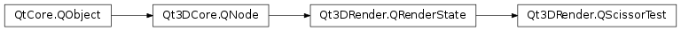

Qt3DRender.QScissorTest¶
Synopsis¶
Signals¶
- def
bottomChanged(bottom) - def
heightChanged(height) - def
leftChanged(left) - def
widthChanged(width)
Detailed Description¶
The
QScissorTestclass discards fragments that fall outside of a certain rectangular portion of the screen.A
QScissorTestclass enables scissor test, which discards fragments outside the rectangular area of the screen specified by the left, bottom, width and height properties.
-
class
PySide2.Qt3DRender.Qt3DRender.QScissorTest([parent=nullptr])¶ Parameters: parent – PySide2.Qt3DCore.Qt3DCore::QNodeThe constructor creates a new
QScissorTest.QScissorTestinstance with the specifiedparent
-
PySide2.Qt3DRender.Qt3DRender.QScissorTest.bottom()¶ Return type: PySide2.QtCore.intSee also
PySide2.Qt3DRender.Qt3DRender::QScissorTest.setBottom()
-
PySide2.Qt3DRender.Qt3DRender.QScissorTest.bottomChanged(bottom)¶ Parameters: bottom – PySide2.QtCore.int
-
PySide2.Qt3DRender.Qt3DRender.QScissorTest.height()¶ Return type: PySide2.QtCore.intSee also
PySide2.Qt3DRender.Qt3DRender::QScissorTest.setHeight()
-
PySide2.Qt3DRender.Qt3DRender.QScissorTest.heightChanged(height)¶ Parameters: height – PySide2.QtCore.int
-
PySide2.Qt3DRender.Qt3DRender.QScissorTest.left()¶ Return type: PySide2.QtCore.intSee also
PySide2.Qt3DRender.Qt3DRender::QScissorTest.setLeft()
-
PySide2.Qt3DRender.Qt3DRender.QScissorTest.leftChanged(left)¶ Parameters: left – PySide2.QtCore.int
-
PySide2.Qt3DRender.Qt3DRender.QScissorTest.setBottom(bottom)¶ Parameters: bottom – PySide2.QtCore.intSee also
PySide2.Qt3DRender.Qt3DRender::QScissorTest.bottom()
-
PySide2.Qt3DRender.Qt3DRender.QScissorTest.setHeight(height)¶ Parameters: height – PySide2.QtCore.intSee also
PySide2.Qt3DRender.Qt3DRender::QScissorTest.height()
-
PySide2.Qt3DRender.Qt3DRender.QScissorTest.setLeft(left)¶ Parameters: left – PySide2.QtCore.intSee also
PySide2.Qt3DRender.Qt3DRender::QScissorTest.left()
-
PySide2.Qt3DRender.Qt3DRender.QScissorTest.setWidth(width)¶ Parameters: width – PySide2.QtCore.intSee also
PySide2.Qt3DRender.Qt3DRender::QScissorTest.width()
-
PySide2.Qt3DRender.Qt3DRender.QScissorTest.width()¶ Return type: PySide2.QtCore.intSee also
PySide2.Qt3DRender.Qt3DRender::QScissorTest.setWidth()
-
PySide2.Qt3DRender.Qt3DRender.QScissorTest.widthChanged(width)¶ Parameters: width – PySide2.QtCore.int
© 2018 The Qt Company Ltd. Documentation contributions included herein are the copyrights of their respective owners. The documentation provided herein is licensed under the terms of the GNU Free Documentation License version 1.3 as published by the Free Software Foundation. Qt and respective logos are trademarks of The Qt Company Ltd. in Finland and/or other countries worldwide. All other trademarks are property of their respective owners.